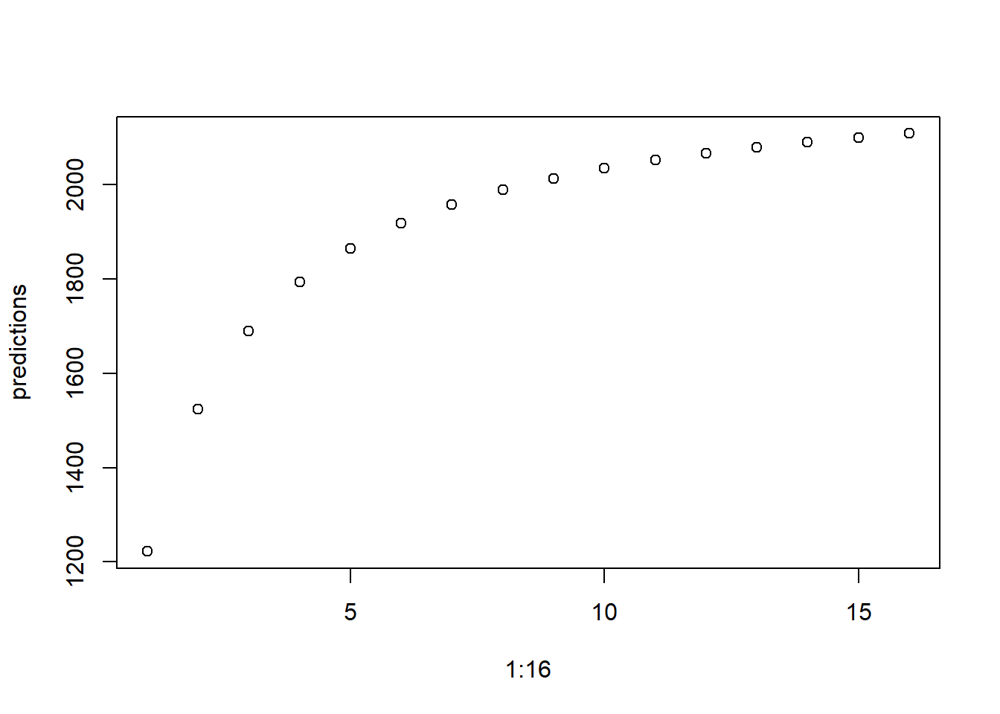

flowchart LR
A{Apply} --> B(Interview)
B --> C(Offer)
C --> D(Accept)
D --> E{Start}
A --> F[Exit]
B --> G[Exit]
C --> H[Exit]
D --> I[Exit]
ITE Recruitment model
Loading the data
The data we use will come from a cleaned cut of the data from 23-24, and a monthly pull from the dashboard in Power BI.1.
1 In future we may want to build this model directly inside of the Power BI workflow
Defining the model
The model assumes that everyone who applies to the NIoT passes enters into a cohort with binary – probabilistic – transitions through a series of gates: being invited to interview, being offered a place, accepting the place, and starting on the course. At each gate, the applicant can either continue to the next gate or drop out of the process entirely; there is no way back into the process once someone has dropped out.
2 In previous analysis we have looked at how these differ by EAL status, and could add this feature to the model in future.
The probabilities of passing through a gate are fixed for all candidates irrespective of personal characteristics.2. However, the probabilities are expected to change linearly through the year. Therefore, the five probabilities (i.e., application, interview, offer, accept, start) are defined by two parameters: an intercept and a slope.
The ten parameters underlying the model are determined using data from the previous year, and updated using monthly data as it accrues in year. The weighting of in-year data (or more accurately, the weights given to the past year’s data) is determined based on the weights that gave the most accurate estimate in the previous year’s prediction in April.3
3 This could be improved; there is surely a model that learns how good the previous data is given the new data.
The model building takes three steps:
- Determining the optimal weights using a 23-24-prediction model imagined from April 2024.
- Estimating the parameters underlying the probabilities from 23-24 data.
- Building a prediction model for 24-25 that incorporates new data as it arises.
[0] Functions
These functions do the work. This first funtion fits the trends to the data, whether that is from last year (in_year = FALSE) or in the year (in_year = TRUE). For the conversion probabilities, these linear models are weighted by the inverse of the number in the denominator.4
4 This can likely be improved.
estimate_params <- function(data, in_year = FALSE){
params <- lm(data[[1]] ~ seq(1:nrow(data))) |>summary() |> coefficients() |> (\(.) .[,1])()
if (in_year == FALSE){s <- 4} else {s <- 3}
for (i in 1:s){
ps <- data[[i + 1]] / data[[i]]
params <- rbind(params,
lm(ps ~ seq(1:nrow(data)), weights=1/(data[[i]])) |>
summary() |>
coefficients() |>
(\(.) .[,1])())
}
if (in_year == TRUE){params <- rbind(params, c(NA, NA))}
colnames(params) <- c("a", "m")
rownames(params) <- c("app", "p_int", "p_off", "p_acc", "p_sta")
return(params)
}This next function updates the parameters based on the last year only with the new in-year data. Note that the parameters relating to the probability of starting do not update since this is unknown.
update_params <- function(w, priors, new_data){
in_year_params <- estimate_params(new_data, in_year = TRUE)
post <- mapply(function(x, y){sum(x * w, y, na.rm = T)/(w+1)},
x = priors[1:4,], y = in_year_params[1:4,])
post <- data.frame(post[1:4], post[5:8])
post <- rbind(post, priors[5, ])
colnames(post) <- colnames(priors)
rownames(post) <- rownames(priors)
return(post)
}Finally, this function returns the monthly modelled numbers (where p = params/prior/posterior).5
5 Compartmental model, with \(a\) and \(m\) as intervept and slope, respectively: \[N^{app}_t = a_1 + Months*m_1\] \[N^{int}_t = N_{t}^{App} * (a_2 + Months*m_2)\] \[N^{off}_t = N_{t}^{int} *(a_3 + Months*m_3)\] \[N^{acc}_t = N_{t}^{off} *(a_4 + Months*m_4)\] \[N^{sta}_t = N_{t}^{acc} *(a_5 + Months*m_5)\]
monthly_modelled <- function(month, p){
app_t <- p[1, 1] + month * p[1, 2]
int_t <- app_t*(p[2, 1] + month * p[2, 2])
off_t <- int_t*(p[3, 1] + month * p[3, 2])
acc_t <- off_t*(p[4, 1] + month * p[4, 2])
sta_t <- acc_t*(p[5, 1] + month * p[5, 2])
return(c(app_t, int_t, off_t, acc_t, sta_t))
}Which can be used in the following way to get the total starters over the ten months:
0:9 |> monthly_modelled(priors) |> (\(.) .[41:50])() |> sum()[1] Determining optimal weights
For this we first need to establish the parameters that were developed from the 22-23 data. These are directly coded below.
params_22_23 <- data.frame(
app = c(a = 600, m = 50),
p_int = c(a = 0.8, m = -0.02),
p_off = c(a = 0.8, m = -0.02),
p_acc = c(a = 0.8, m = 0),
p_sta = c(a = 0.6, m = 0.02)
) |> t()
knitr::kable(params_22_23, caption = "Parameters based on data from 22-23 intake.")| a | m | |
|---|---|---|
| app | 600.0 | 50.00 |
| p_int | 0.8 | -0.02 |
| p_off | 0.8 | -0.02 |
| p_acc | 0.8 | 0.00 |
| p_sta | 0.6 | 0.02 |
Next, we need the data from 23-24 up to the end of April.
data_23_24_April <- data.frame(
app = c(545, 284, 199, 303, 412, 407, 465),
int = c(115, 350, 141, 194, 203, 239, 246),
off = c( 178, 74, 49, 92, 104, 73, 88),
acc = c(122, 60, 22, 75, 97, 52, 88),
sta = c(NA, NA, NA, NA, NA, NA, NA)
)
knitr::kable(data_23_24_April, caption = "Data fom Oct 23 to April 24. Note there is no known data on starts since these are not observed by this point.")| app | int | off | acc | sta |
|---|---|---|---|---|
| 545 | 115 | 178 | 122 | NA |
| 284 | 350 | 74 | 60 | NA |
| 199 | 141 | 49 | 22 | NA |
| 303 | 194 | 92 | 75 | NA |
| 412 | 203 | 104 | 97 | NA |
| 407 | 239 | 73 | 52 | NA |
| 465 | 246 | 88 | 88 | NA |
Finally we can use these to see which weights got closest to the correct answer.
posteriors <- 1:16 |> lapply(update_params, params_22_23, data_23_24_April)
predictions <- lapply(posteriors, function(X){
0:9 |> monthly_modelled(X) |> (\(.) .[41:50])() |> sum() |> unlist()
})
plot(1:16, predictions)
[2] Estimating parameters from 23-24 data
We estimate the parameters by collapsing the data within month and fitting linear models, which are shown in the functions chunk above.
# Load data
data_22_23 <- data.frame()
data_23_24 <- data.frame()
# Remove the first day
# Collapse by month of application
# For each month of application:
# number of applicants, interviews, offers, acceptances, starts
# Probabilities each month, fit models, and extract parameters
estimate_params(data_23_24)
# Plot the trends with the data[3] Prediction model for 24-25
# Load Oct data from 24-25 intake
data_24_25 <- data.frame()
# PredictionFeatures to add
- Handling multiple applications from the same person
- Seasonality
- Integrate into Power BI / Dynamics
- Serrated cascade plot